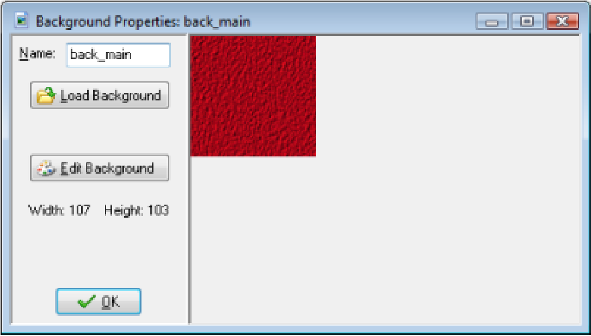
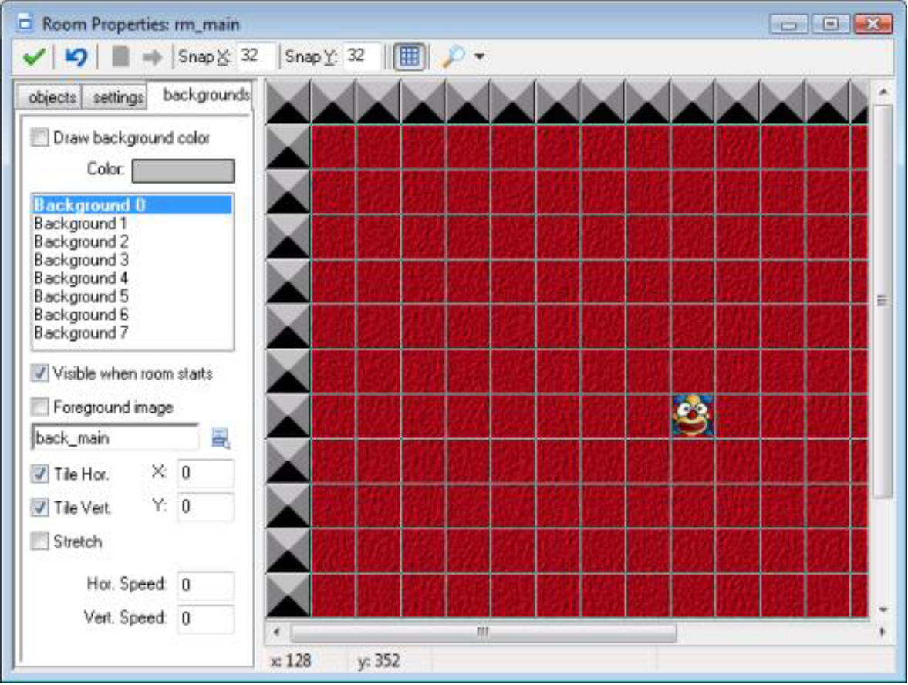
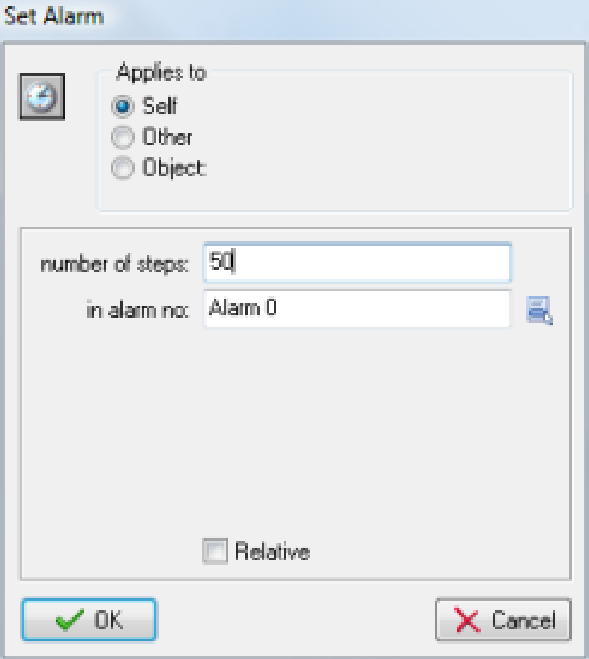
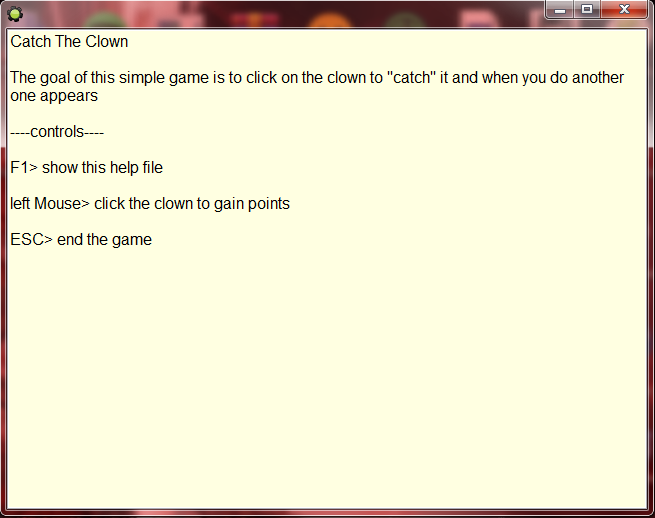

Our first game is ready but it needs some finishing touches to make it a bit nicer. First of all we are going to add some background music. This is very easy.
1. From the Resources menu, choose Create Sound. The Sound Properties form appears. Click on
the Name field and rename it to snd_music.
2. Click on the Load Sound button, navigate to the Resources folder and select the sound file
music.mid. Note that this is a midi file. Midi files are often used for background music as they
use less memory.
3. Press the OK button to close the form.
4. Reopen the clown object by double clicking on it in the resource list at the left of the window.
5. Select the Create event. From the main1 page include a Play Sound action. As Sound indicate
snd_music and set Loop to true because we want the music to repeat itself forever
Secondly we are going to add a background image. The grey background of the room is rather boring. To this end we use a new type of resource, the background resource.
1. From the Resources menu, choose Create Background. The Background Properties form appears. Click on the Name field and rename it to back_main. 2. Click on the Load Background button, navigate to the Resources folder and select the image file background.png. The form should now look like image below.

3. Press OK to close the form.
4. Reopen the room by double clicking on it in the resource list.
5. Select the backgrounds tab. Deselect the property Draw background color.
6. Click on the little menu icon in the middle and pick the back_main in the popup menu. As you
will see, in the room we suddenly have a nice background, As in image below. Note the two
properties Tile Hor. and Tile Vert. They indicate that the background must be tiled horizontally
and vertically, that is, repeated to fill the whole room. For this to work correctly the background
image must be made such that it nicely fits against itself without showing cracks.

If you play the game a bit you will see that it is very easy because you know exactly where the clown is going. To make it more difficult we let the clown change its direction of motion from time to time. To this end we are going to use an alarm clock. Each instance can have multiple alarm clocks. These clocks tick down and at the moment they reach 0 an Alarm event happens. In the creation event of the clown we will set the alarm clock. And in the alarm event we change the direction of motion and set the alarm again.
1. Reopen the clown object by double clicking on it in the resource list at the left of the window.
2. Select the Create event. From the main2 page include a Set Alarm action. As Number of steps
indicate 50. The alarm number we keep as Alarm 0. See image below.

3. Click on Add Event. Choose the button Alarm and in the popup menu select Alarm 0.
4. In the event include the Move Fixed action (from the move tab). Select all eight arrows. Set the
Speed to 0 and enable the Relative property. In this way 0 is added to the speed, that is, it does
not change.
5. To set the alarm clock again, include a Set Alarm action. As Number of steps again indicate 50.
We set the alarm clock to 50 steps but you might wonder what a step is. Default Game Maker takes 30 steps per second. So 50 steps is slightly more than 1.5 seconds. (You can change the game speed in the settings tab in the room properties.)
Finally, each game must tell the players what the goal is and how the user plays the game. So some help is required. Game Maker has a standard mechanism for this.
1. From the Resources menu select Change Game Information. A simple text editor will appear.
2. Type in some useful information for the player, in particular about the goal of the game and the
way to control it. You can use different fonts, sizes, and colors. See for example image below.

During the game this text is automatically shown when the player presses the F1 key (like in most other programs).
Congratulations. You finished your first game. And the first game is always the most difficult one. You
also learned about the most important aspects of Game Maker: sprites, images and sounds, the game
objects, events and actions, and the rooms.
Before continuing with a new game you might want to play a bit more with the Catch the Clown game.
Here are some things you might want to try to add:
- Have two clowns moving around. (This is extremely easy because you can place multiple
instances of the same object in a room.)
- Have a different dark clown that you should not catch because it will cost you part of your score.